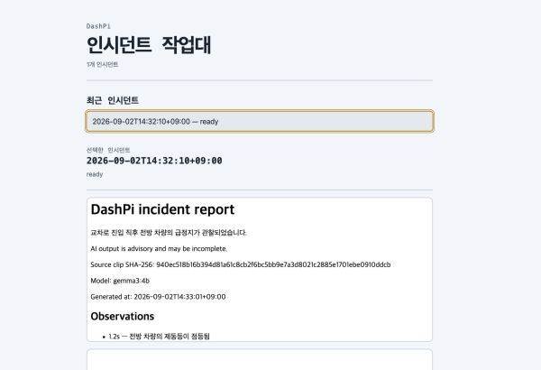
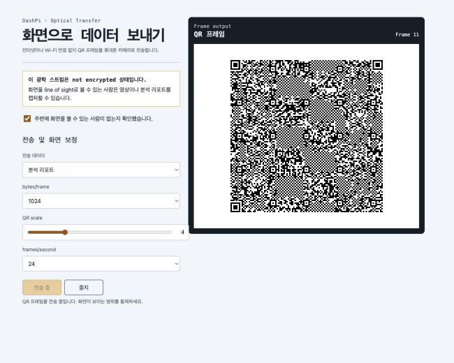
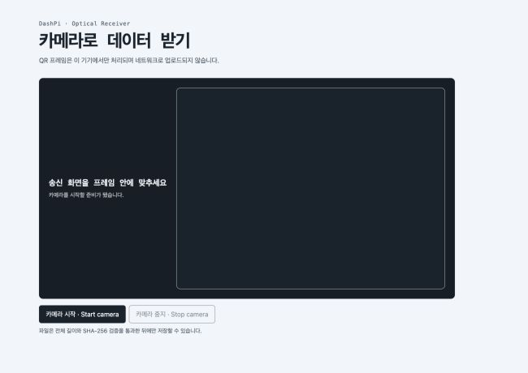

dashpi
인터넷 없이 사고 영상을 보존하고, 로컬 AI로 분석하는 스마트 대시캠
Understand and preserve an accident without depending on the cloud.
01 — 작동 방식
사고 순간부터, 검증 가능한 전달까지.
AI가 실패해도, 증거는 남습니다.
Evidence survives even when analysis fails.
02 — 실제 화면
목업이 아닌, 현재 애플리케이션 캡처.



03 — 전송
파일 크기와 상황에 맞는 두 경로.
| 구분 | Local Wi-Fi | Optical QR |
|---|---|---|
| 적합한 데이터 | 전체 사고 영상, 리포트 | 리포트와 16 MiB 이하 파일 |
| 연결 방식 | 필요할 때만 켜는 WPA2 로컬 핫스팟 | 화면과 카메라의 line-of-sight |
| 전송 방식 | FastAPI + HTTP Range | Animated QR + LT-style fountain symbols |
| 손실 대응 | Range 재요청·이어받기 | 순서가 바뀌거나 일부 유실된 frame 복원 |
| 완료 검증 | 저장된 digest와 파일 검증 | 전체 길이 및 SHA-256 일치 |
| 기밀성 한계 | WPA2 핫스팟 운영을 전제로 설계 | 암호화되지 않음 — 호환 디코더가 있는 주변 카메라가 캡처 가능 |
Optical QR은 일반 카메라 앱만으로 복원할 수 없습니다. 오프라인 수신 전, Receiver PWA를 설치해야 합니다.
04 — 검증
완료된 소프트웨어와 남은 하드웨어 수락 시험.
완료
소프트웨어 구현 및 자동 검증
- incident pipeline과 로컬 분석
- atomic storage와 SHA-256
- ranged video와 로컬 웹 UI
- optical protocol과 offline Receiver PWA
- 자동 테스트와 고정 golden vector 검증
필요
Raspberry Pi 하드웨어 수락 시험
- Picamera2 장시간 녹화와 timestamp 정확도
- 물리 trigger와 로컬 디스플레이 통합
- WPA2 hotspot 및 captive portal 동작
- 화면 밝기·QR scale·FPS·휴대폰 decode rate 보정
- Ollama latency, 메모리, 발열·전력, 전원 차단 복구